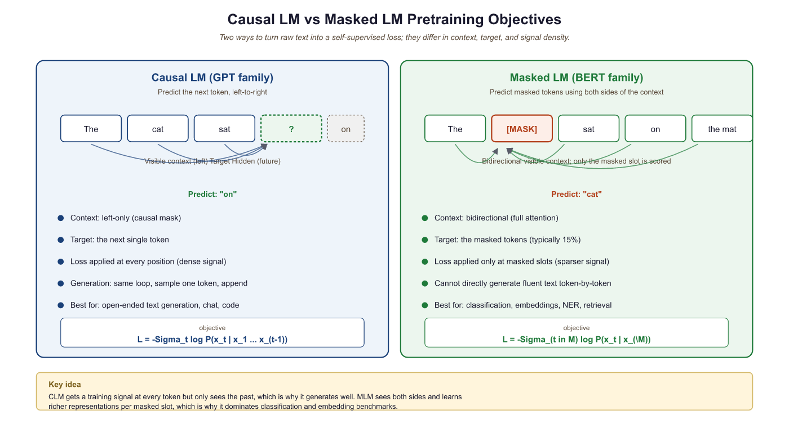
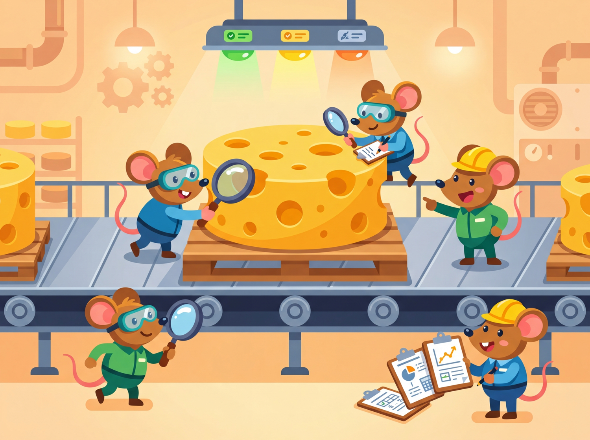
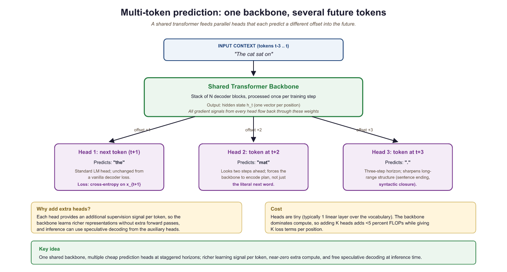

Tell a model to predict the next word and it learns grammar. Mask a word and it learns meaning. Corrupt a span and it learns to complain about the corruption, then fix it anyway.
Scale, Gleefully Predictive AI Agent
Prerequisites
This section builds directly on the Transformer architecture from Section 4.1 (encoder, decoder, and attention masks). Understanding of tokenization from Chapter 02 is assumed. The discussion of multi-token prediction connects forward to Section 7.2 (DeepSeek V3).
Why does the training objective matter? A language model's pre-training objective is the task it solves trillions of times during training. This choice shapes everything: what the model learns to represent, what it can generate, and what downstream tasks it excels at. Causal language modeling produces powerful generators. Masked language modeling produces powerful encoders. Span corruption creates versatile encoder-decoders. Newer objectives like fill-in-the-middle and multi-token prediction push the boundaries further. Understanding these objectives is essential for selecting the right model for your application and for designing new training procedures. The tokenization choices from Chapter 02 directly affect how these objectives operate at the token level.
6.2.1 Causal Language Modeling (CLM)
Causal language modeling, also called autoregressive language modeling, trains a model to predict the next token given all previous tokens. Formally, given a sequence of tokens $x = (x_{1}, x_{2}, ..., x_{T})$, the model maximizes:
The model processes tokens left-to-right, with a causal attention mask that prevents each position from attending to future positions. This makes CLM naturally suited for text generation: at inference time, the model generates one token at a time, feeding each prediction back as input for the next step (see Section 5.1 for the mechanics of autoregressive decoding).
Why CLM Dominates Modern LLMs
Several properties make CLM the preferred objective for large-scale models:
- Every token is a training signal: Unlike MLM (which only learns from masked tokens), CLM provides a gradient signal at every position in the sequence, making training more sample-efficient.
- Natural generation: The training objective exactly matches the inference procedure, avoiding train-test mismatch.
- Scalability: The causal attention mask enables efficient KV caching during inference, where previously computed key-value pairs are reused (see Section 9.2 for KV cache optimization).
- Flexibility: The same model can be prompted for classification, generation, translation, and reasoning, all through the text completion interface. Chapter 11 covers the prompt engineering techniques that exploit this flexibility.
# Implementing causal language modeling loss from scratch
import torch
import torch.nn.functional as F
def causal_lm_loss(logits, labels):
"""
logits: (batch, seq_len, vocab_size)
labels: (batch, seq_len) - same as input tokens shifted by 1
"""
# Shift: predict token t+1 from position t
shift_logits = logits[:, :-1, :].contiguous()
shift_labels = labels[:, 1:].contiguous()
# Cross-entropy loss, ignoring padding tokens (label = -100)
loss = F.cross_entropy(
shift_logits.view(-1, shift_logits.size(-1)),
shift_labels.view(-1),
ignore_index=-100
)
return loss
# Example: batch of 2, sequence length 5, vocab size 100
logits = torch.randn(2, 5, 100)
labels = torch.randint(0, 100, (2, 5))
loss = causal_lm_loss(logits, labels)
print(f"CLM Loss: {loss.item():.4f}")
print(f"Perplexity: {torch.exp(loss).item():.2f}")# Causal language modeling loss from scratch.
# Predict next token at each position; only the SHIFTED-LEFT targets contribute.
import torch
import torch.nn.functional as F
def causal_lm_loss(logits: torch.Tensor, input_ids: torch.Tensor) -> torch.Tensor:
"""logits: (batch, seq_len, vocab)
input_ids: (batch, seq_len)
Returns scalar cross-entropy averaged over all valid positions."""
# Shift: predict input_ids[:, 1:] from logits[:, :-1, :]
pred_logits = logits[:, :-1, :].contiguous() # (B, T-1, V)
targets = input_ids[:, 1:].contiguous() # (B, T-1)
# Cross-entropy over flattened batch+positions
loss = F.cross_entropy(
pred_logits.view(-1, pred_logits.size(-1)),
targets.view(-1),
)
return loss
# Quick sanity check
torch.manual_seed(0)
B, T, V = 2, 10, 50257
fake_logits = torch.randn(B, T, V)
fake_ids = torch.randint(0, V, (B, T))
print(f"Loss: {causal_lm_loss(fake_logits, fake_ids).item():.3f}")
# For an untrained random model on a 50K-token vocab, expect log(50257) ~= 10.8.The implementation above builds causal language modeling loss from scratch for pedagogical clarity. In production, use HuggingFace Transformers (install: pip install transformers), where the loss computation and label shifting are handled automatically:
# Production equivalent: loss is computed internally
from transformers import AutoModelForCausalLM, AutoTokenizer
model = AutoModelForCausalLM.from_pretrained("gpt2")
tokenizer = AutoTokenizer.from_pretrained("gpt2")
inputs = tokenizer("The cat sat on the mat", return_tensors="pt")
outputs = model(**inputs, labels=inputs["input_ids"])
print(f"Loss: {outputs.loss.item():.4f}")# Multi-token prediction: conceptual implementation
import torch
import torch.nn as nn
class MultiTokenPredictionHead(nn.Module):
"""N independent prediction heads sharing a transformer backbone."""
def __init__(self, hidden_dim, vocab_size, n_heads=4):
super().__init__()
self.n_heads = n_heads
# Each head: LayerNorm + Linear projection to vocab
self.heads = nn.ModuleList([
nn.Sequential(
nn.LayerNorm(hidden_dim),
nn.Linear(hidden_dim, vocab_size)
)
for _ in range(n_heads)
])
def forward(self, hidden_states, labels):
"""
hidden_states: (batch, seq_len, hidden_dim)
labels: (batch, seq_len) - original token ids
"""
total_loss = 0.0
for k, head in enumerate(self.heads, start=1):
logits = head(hidden_states) # (batch, seq_len, vocab)
# Shift by k positions: predict token at t+k from position t
shift_logits = logits[:, :-k, :].contiguous()
shift_labels = labels[:, k:].contiguous()
loss_k = nn.functional.cross_entropy(
shift_logits.view(-1, shift_logits.size(-1)),
shift_labels.view(-1),
ignore_index=-100
)
total_loss += loss_k
return total_loss / self.n_heads
mtp = MultiTokenPredictionHead(hidden_dim=512, vocab_size=32000, n_heads=4)
hidden = torch.randn(2, 128, 512)
labels = torch.randint(0, 32000, (2, 128))
loss = mtp(hidden, labels)
print(f"MTP Loss (4 heads): {loss.item():.4f}")
Next-token prediction is, mathematically, an exercise in learning the conditional probability distribution of language. This connects directly to Shannon's foundational work on information theory (1948), where he defined the entropy of English as the limit of the per-symbol prediction difficulty. Shannon estimated English has about 1 to 1.5 bits of entropy per character. Modern LLMs, trained on next-token prediction, are essentially building ever more accurate approximations of this distribution. The cross-entropy loss used in training is a direct upper bound on the true entropy of the data source. When a model achieves lower perplexity, it is, in information-theoretic terms, building a better compression model of language. This is why Ilya Sutskever has argued that "compression is intelligence": a model that can predict the next token well must have internalized the statistical structure, grammar, facts, and reasoning patterns embedded in its training corpus.
6.2.2 Masked Language Modeling (MLM)
Masked language modeling is essentially a fill-in-the-blank exercise at massive scale. BERT learned to read by doing the same kind of worksheet your third-grade teacher handed out, just across billions of sentences instead of a dozen.
Masked language modeling, introduced by BERT, randomly masks a fraction of input tokens and trains the model to reconstruct them from the surrounding (bidirectional) context. The standard recipe masks 15% of tokens, with 80% replaced by [MASK], 10% replaced by a random token, and 10% kept unchanged.
where $M$ is the set of masked positions and $x_{\mathcal{M}}$ denotes the corrupted input (all tokens with masks applied).
Strengths and Limitations
MLM's bidirectionality is its greatest strength for understanding tasks. A model that sees both left and right context can build richer representations of each token. This is why BERT-style models dominate in classification, named entity recognition, and other tasks where the full context is available.
However, MLM has significant limitations. Only 15% of tokens provide training signal per forward pass, making it less sample-efficient than CLM. The [MASK] token never appears during inference, creating a train-test mismatch. And MLM models cannot naturally generate text because they assume access to future context during prediction.

Who: An AI team at a legal technology firm building a semantic search engine for court opinions and case law.
Situation: The system needed to understand nuanced legal language to match queries with relevant precedents, requiring deep bidirectional understanding of context.
Problem: A GPT-style (CLM) model fine-tuned for embeddings performed poorly on legal retrieval tasks because it processed text left-to-right, missing backward contextual cues critical for understanding legal clauses like "notwithstanding the foregoing."
Dilemma: CLM models offered better generation (useful for summarization features), but MLM models produced superior embeddings for retrieval. Running both models doubled serving costs.
Decision: They adopted a two-stage approach: a fine-tuned DeBERTa (MLM-based) encoder for retrieval and ranking, paired with a small CLM model for optional summary generation.
How: The team pre-trained DeBERTa on 2M legal documents using MLM, then fine-tuned it with contrastive learning on query-document pairs. The CLM model was only invoked when users requested case summaries.
Result: Retrieval recall@10 improved from 72% to 89% compared to the CLM-only baseline. The hybrid approach added only 15% to infrastructure costs versus the original CLM-only system.
Lesson: The pre-training objective fundamentally shapes what a model is good at: MLM produces better encoders for understanding tasks, while CLM produces better generators. Choose based on your primary use case.
CLM and MLM represent two ends of a spectrum: predict the next token versus predict masked tokens. But what if we masked entire spans of text rather than individual tokens? This hybrid idea led to a third family of pre-training objectives that combines the strengths of both approaches.
6.2.3 Span Corruption and Denoising Objectives

T5 introduced span corruption, a variant of MLM that masks contiguous spans of tokens rather than individual tokens. A random 15% of tokens are selected, grouped into contiguous spans, and each span is replaced with a single unique sentinel token (like <extra_id_0>). The model then generates the corrupted spans in order, separated by sentinel tokens.
Why Spans Are Better Than Single Tokens
Span corruption is more efficient than single-token masking for several reasons. First, the target sequence is shorter because multiple masked tokens are represented by a single sentinel, reducing the computational cost of the decoder. Second, the model must predict multiple consecutive tokens per span, encouraging it to learn phrase-level and sentence-level patterns rather than just word-level predictions.
# Simulating T5 span corruption
import random
def span_corruption(tokens, mask_ratio=0.15, mean_span_length=3):
"""Apply T5-style span corruption to a token list."""
n = len(tokens)
num_masked = int(n * mask_ratio)
num_spans = max(1, num_masked // mean_span_length)
# Generate random span starts and lengths
mask = [False] * n
masked_so_far = 0
for _ in range(num_spans):
if masked_so_far >= num_masked:
break
span_len = random.randint(1, mean_span_length * 2)
start = random.randint(0, n - 1)
for i in range(start, min(start + span_len, n)):
mask[i] = True
masked_so_far += 1
# Build corrupted input and target
corrupted, target = [], []
sentinel_id = 0
in_span = False
for i, tok in enumerate(tokens):
if mask[i]:
if not in_span:
corrupted.append(f"<extra_id_{sentinel_id}>")
target.append(f"<extra_id_{sentinel_id}>")
sentinel_id += 1
in_span = True
target.append(tok)
else:
corrupted.append(tok)
in_span = False
return corrupted, target
tokens = "The quick brown fox jumps over the lazy dog".split()
random.seed(42)
corrupted, target = span_corruption(tokens)
print(f"Input: {' '.join(corrupted)}")
print(f"Target: {' '.join(target)}")UL2: Mixture of Denoisers
UL2 (Unified Language Learning, 2022) took the denoising approach further by mixing multiple corruption strategies during pre-training. It combined three modes: (1) R-denoiser (regular denoising, like T5, with short spans), (2) S-denoiser (sequential denoising, similar to prefix LM, masking a suffix), and (3) X-denoiser (extreme denoising, with long spans and high mask ratios). A mode token prepended to each example tells the model which type of denoising to perform. This produced a single model that excelled at both understanding and generation tasks.
6.2.4 Prefix Language Modeling
Prefix LM is a hybrid approach used by models like PaLM and GLM. The input is divided into a prefix (which uses bidirectional attention) and a suffix (which uses causal attention). The prefix provides full context for encoding the input, while the suffix generates output autoregressively. This combines the encoding strength of MLM with the generation capability of CLM.
Prefix LM is implemented simply by modifying the attention mask. For a sequence of length T where the first P tokens are the prefix, positions 1 through P attend to all positions 1 through P (bidirectional), while positions P+1 through T attend only to positions 1 through their own index (causal). No architectural changes are needed.
6.2.5 Fill-in-the-Middle (FIM)
Fill-in-the-middle is a training objective designed specifically for code models (like Codex, StarCoder, and CodeLlama, discussed further in Section 27.1). The key observation is that programmers frequently need to insert code at an arbitrary position within existing code, but standard CLM only supports appending tokens at the end.
FIM works by splitting a document into three parts: prefix, middle, and suffix. During training, these parts are rearranged so the model sees the prefix and suffix first, then generates the middle. The most common variant, called PSM (Prefix-Suffix-Middle), presents the input as:
An alternative variant, SPM (Suffix-Prefix-Middle), places the suffix before the prefix. The model learns to condition on both surrounding context to generate the infilling content.
# Fill-in-the-Middle (FIM) transformation
import random
def apply_fim(document, fim_rate=0.5, mode="PSM"):
"""Transform a document for FIM training."""
if random.random() > fim_rate:
return document # Keep as regular CLM with probability (1 - fim_rate)
# Choose a random split point for the middle section
chars = list(document)
n = len(chars)
split1 = random.randint(0, n)
split2 = random.randint(split1, n)
prefix = document[:split1]
middle = document[split1:split2]
suffix = document[split2:]
if mode == "PSM":
return f"<PRE>{prefix}<SUF>{suffix}<MID>{middle}"
elif mode == "SPM":
return f"<SUF>{suffix}<PRE>{prefix}<MID>{middle}"
# Example with code
code = """def fibonacci(n):
if n <= 1:
return n
return fibonacci(n-1) + fibonacci(n-2)"""
random.seed(0)
fim_example = apply_fim(code, fim_rate=1.0)
print(fim_example)FIM is remarkably efficient to add. The original paper showed that applying FIM transformations to 50% of training documents during standard CLM pre-training adds the infilling capability with essentially zero degradation to left-to-right generation quality. This makes it a "free" capability that all code models should include.
6.2.6 Multi-Token Prediction
Standard CLM predicts only one token ahead. Multi-token prediction (MTP), introduced by Meta in 2024 and later adopted by DeepSeek V3, trains the model to predict several future tokens simultaneously. The architecture adds N independent prediction heads to a shared transformer backbone. Head k predicts token $x_{t+k}$ given tokens $x_{1}, ..., x_{t}$.
Why Predict Multiple Tokens?
The benefits of multi-token prediction are both theoretical and practical:
- Better representations: To predict multiple future tokens simultaneously, the model must encode richer information about the sequence at each position, including longer-range dependencies.
- Improved sample efficiency: Each training example provides N times more gradient signal per position.
- Speculative decoding compatibility: The additional prediction heads can be used as draft models for speculative decoding, accelerating inference by 2-3x without any additional model.
- Diminishing returns: Experiments show most of the benefit comes from N=4 heads. Adding more heads increases training memory without proportional gains.

# Multi-token prediction (Meta, "Better & Faster LLMs via Multi-Token Prediction" 2024).
# Train the model to predict the NEXT k tokens at every position, using k parallel heads.
# Improves sample efficiency and downstream code/math performance.
import torch
import torch.nn as nn
import torch.nn.functional as F
class MultiTokenPredictionHead(nn.Module):
"""k separate linear heads sharing the same trunk; head[i] predicts token (t+i+1)."""
def __init__(self, d_model: int, vocab: int, n_future: int = 4):
super().__init__()
self.n_future = n_future
self.heads = nn.ModuleList([nn.Linear(d_model, vocab) for _ in range(n_future)])
def forward(self, hidden: torch.Tensor) -> list[torch.Tensor]:
"""hidden: (B, T, d_model) -> list of n_future tensors each (B, T, vocab)"""
return [head(hidden) for head in self.heads]
def loss(self, hidden: torch.Tensor, input_ids: torch.Tensor) -> torch.Tensor:
"""Sum cross-entropy across the k future positions, dropping the tail."""
logits_list = self(hidden)
B, T, _ = hidden.shape
total = 0.0
for i, logits in enumerate(logits_list, start=1):
# head i predicts token at position (t+i); drop the last i positions
valid_logits = logits[:, :T - i, :].contiguous().view(-1, logits.size(-1))
targets = input_ids[:, i:].contiguous().view(-1)
total = total + F.cross_entropy(valid_logits, targets)
return total / self.n_future
6.2.7 Continual Pre-training
All of the objectives described above focus on training a model from scratch. But a growing body of work demonstrates that continual pre-training (also called domain-adaptive pre-training or continued pre-training) is a powerful and cost-effective technique for adapting an existing foundation model to a new domain, language, or capability without the expense of a full training run.
The core idea is straightforward: take a pre-trained model's checkpoint and resume CLM training on a new corpus that emphasizes the target domain. For example, a general-purpose model trained primarily on English web text can be continually pre-trained on a large corpus of biomedical papers, legal documents, or code. The model retains its general capabilities while absorbing domain-specific knowledge, vocabulary patterns, and reasoning styles. This is far cheaper than pre-training from scratch because the model already has strong language understanding; the continual phase only needs to adjust the distribution, typically requiring 10 to 100 billion tokens rather than trillions.
Several practical considerations govern successful continual pre-training:
- Learning rate: The peak learning rate should be significantly lower than the original pre-training rate (typically 10 to 50% of the original). Starting with too high a rate causes catastrophic forgetting of the model's existing knowledge. Most practitioners use a WSD or cosine schedule with a short warmup phase.
- Data mixing: Mixing domain-specific data with a proportion of general data (often called "replay" data) helps prevent the model from losing its general capabilities. A common ratio is 70 to 90% domain data and 10 to 30% general replay data.
- Tokenizer adaptation: If the target domain uses specialized vocabulary (medical terms, legal jargon, a new programming language), the original tokenizer may produce inefficient or fragmented tokenizations. Some approaches extend the tokenizer with domain-specific tokens and initialize their embeddings from related existing tokens.
- Evaluation: Track both domain-specific benchmarks (to measure gains) and general benchmarks (to detect forgetting). A successful continual pre-training run improves domain performance while maintaining at least 95% of general benchmark scores.
Notable examples include Meta's Code Llama (continual pre-training of Llama 2 on 500B tokens of code), Llama 3.1's context extension (continual pre-training from 8K to 128K context using progressively longer sequences), and numerous domain-specific models in medicine (BioMistral, Med-PaLM), law (SaulLM), and finance (BloombergGPT). Continual pre-training occupies a middle ground between fine-tuning (which adjusts model behavior with relatively little data) and full pre-training (which builds capabilities from the ground up). It is increasingly the recommended first step when adapting a foundation model to a specialized domain.
6.2.8 Comparison of Pre-training Objectives
| Objective | Architecture | Context | Training Efficiency | Best For |
|---|---|---|---|---|
| CLM | Decoder-only | Left-to-right | 100% tokens train | Generation, prompting |
| MLM | Encoder-only | Bidirectional | 15% tokens train | Classification, NER |
| Span Corruption | Encoder-Decoder | Bidirectional enc | 15% tokens, shorter target | Seq2seq, translation |
| Prefix LM | Decoder-only | Hybrid | Suffix tokens train | Conditional generation |
| FIM | Decoder-only | Prefix + Suffix | 100% tokens train | Code infilling |
| MTP | Decoder-only | Left-to-right | N x signals per position | Better representations |
DeepSeek V3 (2024) provided the strongest validation of multi-token prediction, using 4 prediction heads during pre-training of a 671B MoE model. The additional heads served double duty: improving representation quality during training and enabling self-speculative decoding during inference, eliminating the need for a separate draft model. See Section 7.2 for the full DeepSeek V3 architecture discussion.
All objectives discussed here assume a transformer backbone. An active line of research explores alternative architectures like Mamba (Gu and Dao, 2023) and RWKV, which replace attention with state-space models (SSMs) or linear recurrences. These achieve linear scaling with sequence length (versus quadratic for attention) and process tokens in constant memory during inference. Hybrid architectures like Jamba interleave attention and Mamba layers for the best of both worlds. While transformers remain dominant, SSMs are a rapidly maturing alternative covered by Stanford CS336 and Berkeley CS294.
Show Answer
Show Answer
Show Answer
Show Answer
Show Answer
All pre-training objectives share a common mathematical foundation: they train the model to compress its training data. CLM compresses by predicting the next token (minimizing softmax is equivalent to minimizing the coding length under the model's distribution). MLM compresses by predicting masked tokens from context. This connects to Solomonoff's theory of inductive inference (1964), which proved that the best predictor of any sequence is the shortest program that generates it. A language model that achieves low perplexity has, in a precise sense, found a compressed representation of human language. This view explains why pre-training on "mere" next-token prediction produces models capable of reasoning, translation, and code generation: to predict text well, the model must build internal representations of grammar, world knowledge, and logical structure, because those are exactly the regularities that enable compression. Understanding and compression are two perspectives on the same phenomenon.
Plot your training loss every few hundred steps. A healthy curve should decrease smoothly. Sudden spikes indicate data quality issues or learning rate problems. Save these plots; they are invaluable for debugging failed runs after the fact.
Key Takeaways
- CLM (next-token prediction) is the dominant pre-training objective because every token trains the model and the objective naturally matches autoregressive generation.
- MLM produces superior representations for understanding tasks by leveraging bidirectional context, but wastes 85% of tokens per sequence as training signal.
- Span corruption (T5) improves on MLM by masking contiguous spans, producing shorter and more efficient target sequences.
- Fill-in-the-middle adds infilling capability to CLM models at essentially zero cost by rearranging a fraction of training documents.
- Multi-token prediction enriches representations by requiring the model to plan further ahead, and enables faster inference through speculative decoding.
- The choice of pre-training objective shapes a model's strengths; there is no universally best objective, only the right one for your use case.
Exercises
A causal language model produces a training signal at every token position, while a masked language model with 15% masking only learns from the masked positions. Naively this suggests MLM is ~6.7x less sample-efficient per token. (a) Why didn't BERT die in 2019 from this disadvantage? (b) Why did the field eventually move toward CLM-style objectives anyway? (c) For an embedding-only use case, which objective would you still prefer in 2026?
Answer Sketch
(a) Each masked position uses bidirectional context, which is a much richer signal per prediction than CLM's left-only context, partly compensating for the lower density. BERT also typically processed every example in a single forward pass for both pretraining and fine-tuning, so wall-clock efficiency was competitive on NLU benchmarks. (b) CLM scales more cleanly: every token is a label, so adding more data linearly grows the loss signal, and the same model architecture handles generation, classification, and extraction. (c) For pure embedding work (semantic search, dense retrieval), MLM-style bidirectional encoders like DeBERTa-v3 or modern sentence-transformer recipes still produce stronger per-parameter retrieval scores, because both tokens of a pair contribute information to the contextual representation.
T5 uses span corruption with mean span length 3 and 15% corruption rate over 512-token inputs. (a) How many spans does an average example contain? (b) What is the expected length of the encoder input and decoder target after sentinel substitution? (c) Why does this objective produce shorter encoder inputs than the original sequence?
Answer Sketch
(a) 15% of 512 = 76.8 corrupted tokens; with mean span length 3, that is roughly 26 spans per example. (b) Encoder input: 512 - 76.8 + 26 sentinels ~= 461 tokens. Decoder target: 76.8 corrupted tokens + 26 leading sentinels + 1 final sentinel ~= 104 tokens. (c) Each span of N tokens collapses to a single sentinel in the encoder, so any span longer than 1 shortens the input. This is why span corruption is more compute-efficient per useful prediction than per-token masking: the encoder does less work, and every sentinel position in the decoder produces a multi-token prediction trained as a single autoregressive run.
Sketch a Python function to_fim(text, prefix_len, suffix_len) that converts a text sample into the OpenAI FIM training format used for code completion: <|fim_prefix|>PREFIX<|fim_suffix|>SUFFIX<|fim_middle|>MIDDLE. The function should pick a random middle span, leave at least prefix_len and suffix_len tokens of context, and return the reordered string. Five lines of pseudocode is enough.
Answer Sketch
def to_fim(text, prefix_len, suffix_len):
toks = tokenize(text)
start = random.randint(prefix_len, len(toks) - suffix_len - 1)
end = random.randint(start + 1, len(toks) - suffix_len)
P, M, S = toks[:start], toks[start:end], toks[end:]
return f"<|fim_prefix|>{P}<|fim_suffix|>{S}<|fim_middle|>{M}"The key trick is that the model still trains autoregressively (left to right), but the reordered format means the loss target appears after both prefix and suffix in the token stream. At inference time, you supply prefix and suffix in the same template and let the model generate until it emits the EOS or fim end token.
You take a strong base Llama-3-8B and continue pretraining it on 50B tokens of medical literature to build a domain expert. After training, the medical benchmark scores rise by 12 points but the model has forgotten how to write Python and refuses to follow basic instructions. (a) Diagnose the two distinct failure modes. (b) Suggest one mitigation for each. (c) Why is this risk smaller for fine-tuning than for continual pretraining?
Answer Sketch
(a) Failure 1 is catastrophic forgetting of pretraining knowledge (Python skill loss) caused by the gradient updates pulling weights toward the medical-only data manifold. Failure 2 is loss of instruction-following because the medical corpus contains no instruction-style data, so the chat-tuning is overwritten. (b) For forgetting: mix in 5-15% of the original pretraining corpus (a "data replay" buffer). For instruction-following: re-apply a short SFT pass on the chat dataset after the domain phase, or interleave instruction data throughout. (c) Fine-tuning typically uses much smaller learning rates (1e-5 vs 1e-4) and far fewer tokens, so the weight perturbation is bounded; continual pretraining changes a much larger fraction of the parameters.
Beyond next-token prediction. Multi-token prediction (Gloeckle et al., 2024) demonstrated that predicting multiple future tokens simultaneously improves both representation quality and inference speed through speculative decoding (Section 9.3). DeepSeek V3 adopted this approach at scale. Meanwhile, diffusion-based language models (MDLM, SEDD) explore non-autoregressive generation that can edit text in parallel rather than left-to-right. Hybrid objectives combining masked and causal pre-training (UL2) suggest that the next generation of foundation models may blend multiple paradigms within a single training run, choosing the objective dynamically based on the data distribution.
What's Next?
In the next section, Section 6.3: Scaling Laws and Compute-Optimal Training, we study scaling laws and compute-optimal training, the empirical relationships that guide how to allocate resources for maximum capability.
Further Reading
Radford, A. et al. (2018). "Improving Language Understanding by Generative Pre-Training." OpenAI.
The original GPT paper that established autoregressive language modeling as a pre-training objective for downstream NLP tasks. Showed that generative pre-training followed by discriminative fine-tuning yields strong transfer performance.
Defines the masked language modeling (MLM) objective that enables bidirectional context during pre-training. Contrasts with causal LM by allowing tokens to attend in both directions, giving encoders richer representations for classification tasks.
The T5 paper that systematically compares span corruption, prefix LM, and other pre-training objectives in a unified text-to-text framework. An invaluable reference for understanding which objectives work best for which task types.
Shows how to add fill-in-the-middle (FIM) capability to autoregressive models by simply rearranging training sequences. Enables code completion at arbitrary cursor positions without sacrificing left-to-right generation quality.
Trains models to predict multiple future tokens simultaneously using auxiliary prediction heads. Improves both sample efficiency during training and enables speculative decoding at inference time for faster generation.
Tay, Y. et al. (2023). "UL2: Unifying Language Learning Paradigms." ICLR 2023.
Proposes a mixture-of-denoisers framework that combines causal LM, prefix LM, and span corruption objectives during pre-training. Demonstrates that mixing paradigms produces models that excel at both generation and understanding tasks.